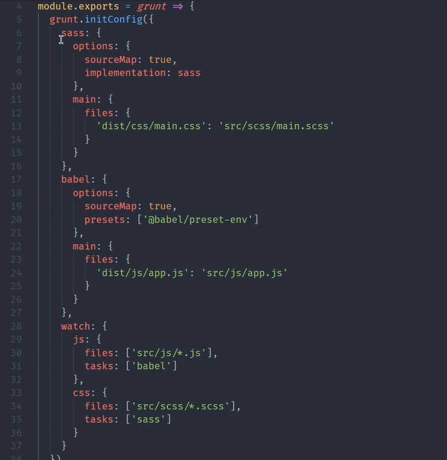

自动化构建
常用的自动化构建工具
Grunt ， Gulp ， FIS
Grunt
Grunt的基本使用
1、npm init
2、npm install grunt
3、创建一个gruntfile.js文件
4、在package.json里添加相应的script
5、在gruntfile.js里编写要执行的任务代码
6、npm run grunt '任务名' 启动任务
gruntfile.js是Grunt的入口文件，用于定义一些需要Grunt自动执行的任务。需要导出一个函数，次函数接受一个grunt的形参。
如果定义一个 'default'的任务的话 ，这个任务将成为grunt的默认任务，在运行任务的时候不需要指定任务名称，直接npm run grunt， grunt将自动调用default，一般用于映射其他任务，就是在第二个参数上传入一个数组，这个数组指定任务名字，grunt会依次执行数组里的任务，会把任务串联起来。
grunt对异步的支持。
默认支持同步模式，如果需要异步操作，需要执行this.async()方法，得到一个回调函数，在异步操作完成后调用这个回调函数。
module.exports = grunt => {
grunt.registerTask('foo',()=>{
console.log('Hello,Grunt!')
})
grunt.registerTask('secondTask','这是一个描述信息。', () =>{
console.log("我的第二个任务。")
})
grunt.registerTask('async-task', function(){
let done1 = this.async()
setTimeout(() =>{
console.log('async task1')
done1()
},1000)
setTimeout(() =>{
console.log('async task2')
done1()
},1000)
})
grunt.registerTask('default',['foo','secondTask'])
}
Grunt标记任务失败
如果代码当中发生错误， 可以标记为失败任务，可以在函数体内部return false实现。
如果是异步任务，可以done(false)来标记。
Grunt的配置方法
除了grunt.registerTask()方法以外grunt还提供了添加一些配置选项的API,叫grunt.initConfig()，里面接收一个对象作为参数，对象的键一般与任务名称保持一致，属性的值可以为任意类型的数据。
在registerTask里的回调函数里可以使用grunt.config()来获取配置,config方法接收一个字符串参数，字符串就是刚才定义的键。
Grunt多目标任务
通过grunt.registerMultiTask()方法来定义。接受两个参数，第一个是参数的名字，第二个参数是函数。
通过grunt.initConfig()方法设置一些targets。
可以通过this.target, this.data来获取到当前的目标以及对应的值。
options会作为配置选项出现。可以通过this.options()方法来拿到配置选项。
目标中也可以添加options，如果与任务中的options重名的话，目标中的options会覆盖任务中的options
module.exports = grunt =>{
grunt.initConfig({
build: {
options: {
pxr: 123
},
first: {
options: {
pxr:999
},
html: 1
},
second: 2,
}
})
grunt.registerMultiTask('build',function(){
console.log(this.options())
console.log(this.target , this.data)
})
}
grunt插件
找到插件然后安装到npm模块当中
通过grunt.loadNpmTasks()方法来加载插件任务
在grunt.initConfig()里面添加一些配置选项

Gulp基本使用
高效，易用
现在项目中安装一个gulp的开发依赖
在项目的根目录，也就是package.json下面添加一个gulpfile.js文件。用于编写需要gulp自动执行的任务。
编写完后可以使用gulp-cli来运行这些任务。
1、npm init
2、npm i gulp -D
3、npm i gulp-cli -D
4、创建一个gulpfile.js (gulp的入口文件)
5、npm run gulp foo
最新的gulp取消了同步代码模式，约定一个任务必须都是一个异步的任务，当任务执行完成后需要调用回调函数来标记该任务已经完成。
exports.foo = done=>{
console.log('foo task working!')
done()
}
Gulp的组合任务
const { series, parallel } = require('gulp')
series是将任务串联，parallel是将任务并联。
exports.ppp = series(task1,task2,task3)
exports.xxx = parallel(task1,task2,task3)
Gulp的异步任务
异步任务的三种方式
1、通过回调函数实现
exports.ppp_error = done => {
console.log('callback task!')
done(new Error('task failed!'))
}
2、通过promise
exports.promise = () =>{
console.log('promise task!')
return Promise.reject(new Error('task failed!'))
}
3、async awaite
exports.async= async() =>{
await timeout(1000)
console.log('async task!')
}
4、
const fs = require('fs')
exports.stream = done => {
const readStream = fs.createReadStream('package.json')
const writetream = fs.createWriteStream('pxr.txt')
readStream.pipe(writetream)
return readStream
}